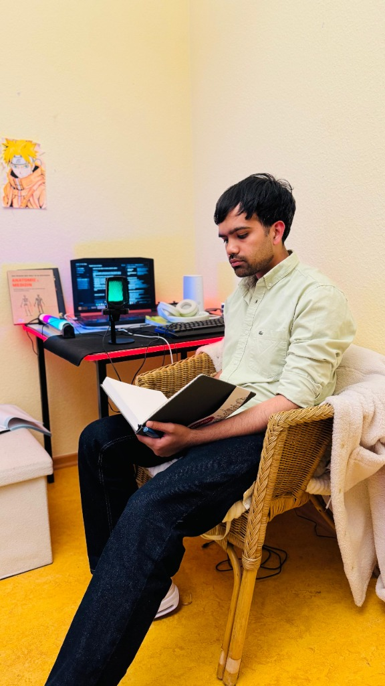
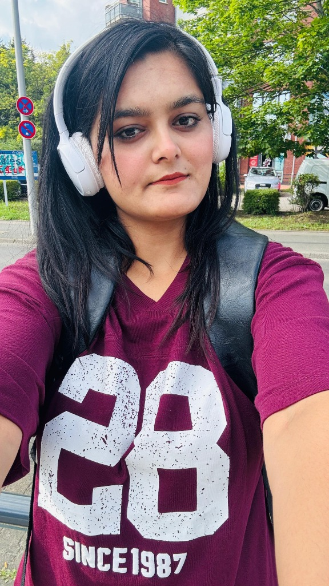

Learn German, prepare for Studienkolleg, and plan your Germany journey with confidence.
Gateway to Future helps students with German language classes, Germany study pathways, visa counseling, and structured preparation for life and study in Germany.
Services
Built for students who want a clear, professional route from language learning to studying in Germany.
German Classes
Live online support from beginner to advanced level with structured learning.
Visa Counseling
Guidance on admissions, financial proof, APS, blocked account, and appointments.
Studienkolleg
Help choosing the right course path and preparing for entrance exams.
FAQ
Do I need German for Germany study?
Many study paths require German, especially Studienkolleg and German-taught programs.
Can this app be used as a real landing page?
Yes. It is a single-file app and can run by opening the HTML file in a browser.
What should I replace?
Update the WhatsApp number, email, and any pricing or service details to match your business.
German Classes
Choose the level that fits your current ability and study goal.
Beginner foundation
Alphabet, greetings, sentence basics, and first speaking practice.
Fee: ₹7,999
Elementary level
Daily communication, grammar growth, and listening practice.
Fee: ₹9,999
Intermediate level
Exam-focused reading, writing, speaking, and grammar.
Fee: ₹12,999
Advanced preparation
Academic language and stronger exam preparation.
Fee: ₹15,999
Professional fluency
Advanced comprehension, confidence, and precision.
Fee: Contact for pricing
Fee Calculator
Total: ₹7,999
Try code STUDENT10 for 10% off.
Kostenlose Kursmaterialien / Free Course Materials
Laden Sie unsere offiziellen A1-Lehrbücher herunter, um Ihre Reise zu beginnen. / Download our official A1 textbooks to start your learning journey.
Visa Counseling
Step-by-step support for Germany study planning.
1. Profile check
Review education background, goals, and language level.
2. Document prep
Organize admission papers, financial proof, insurance, and APS if needed.
3. Interview prep
Practice common visa questions and application consistency.
Common checklist
Valid and ready for travel.
Blocked account or other accepted proof.
University or Studienkolleg documents.
Studienkolleg
Understand which course fits your future study path.
| Course | For | Focus |
|---|---|---|
| T-Course | Technical/engineering | Maths, science, and technical subjects |
| M-Course | Medicine/life sciences | Biology, chemistry, and related subjects |
| W-Course | Business/economics | Economics, math, and social science basics |
| G-Course | Humanities | German, literature, and social subjects |
| S-Course | Languages | Language-focused preparation |
Entrance prep
Structured practice for entrance exams and subject basics.
Application help
Support with documents, deadlines, and planning.
Pathway advice
Choose the route that fits your degree goal.
Contact and Booking
Submit your details to request a session.
Booking form
Business details
Brand: Gateway to Future
Location: Berlin, Germany
WhatsApp: +49 15228372894
Email: ashusharmaa1408@icloud.com
Replace these placeholders with your real details before publishing.
Über uns / About Us
Lernen Sie die Gründer und Lehrkräfte von Gateway to Future kennen. / Meet the founders and educators behind Gateway to Future.

Ashutosh Sharma
Gründer & Studienberater / Founder & AdvisorDeutsch: Ashutosh Sharma ist der Gründer von Gateway to Future und ein erfahrener Berater für Bildungs- und Karrierewege in Deutschland. Nach seinem Medizinstudium an der Lugansk Medical State University absolvierte er eine Ausbildung zum Pflegefachmann (Psychiatrie) und arbeitete als Pflegehelfer in Berlin. Mit seinen umfassenden Kenntnissen des deutschen Bildungs- und Gesundheitssystems und Sprachkenntnissen in Deutsch (B2), Englisch (B2), Hindi und Urdu unterstützt er Studentinnen und Studenten kompetent bei Visaverfahren, Studienkolleg-Bewerbungen und dem gesamten Umsiedlungsprozess.
English: Ashutosh Sharma is the founder of Gateway to Future and an expert advisor for academic and career pathways in Germany. Following his medical studies at Lugansk Medical State University, he completed training as a healthcare professional (psychiatry) and worked as a care assistant in Berlin. Leveraging his deep expertise in the German educational and healthcare systems along with his multilingual skills (German B2, English B2, Hindi, Urdu), he guides students through visa procedures, Studienkolleg applications, and relocation.

Sarbjit Kour
Mitgründerin & Deutschlehrerin / Co-founder & TeacherDeutsch: Sarbjit Kour ist die Mitgründerin und Deutschlehrerin bei Gateway to Future. Sie verfügt über fundierte pädagogische Erfahrung sowie praktische Einblicke in das deutsche Arbeitsleben durch ihre Ausbildung als Pflegefachkraft und Betreuungsassistentin in Berlin. Mit Sprachkenntnissen in Punjabi, Hindi, Englisch und Deutsch (B2) unterstützt sie Studierende leidenschaftlich beim Erlernen der deutschen Sprache (A1–B2) und bereitet sie erfolgreich auf die sprachlichen Anforderungen des Alltags und der Berufswelt in Deutschland vor.
English: Sarbjit Kour is the co-founder and German language instructor at Gateway to Future. She possesses strong teaching experience alongside practical insights into the German workforce from her training as a healthcare professional and care assistant in Berlin. Fluent in Punjabi, Hindi, English, and German (B2), she is passionate about helping students master the German language (A1–B2) and preparing them for the daily linguistic demands of living and working in Germany.